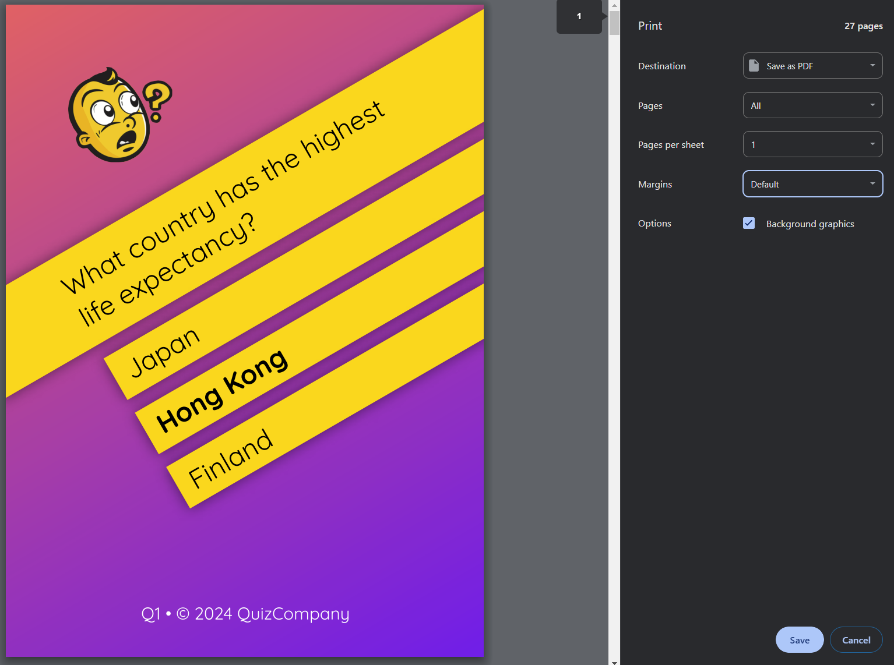
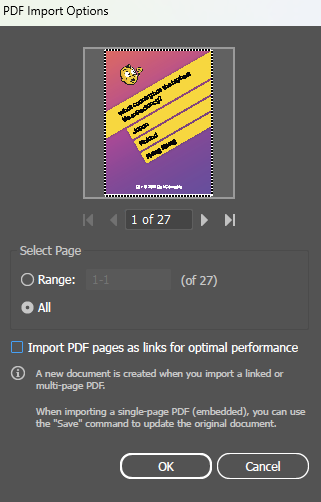
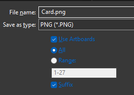
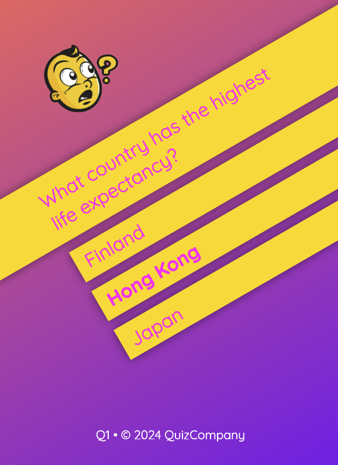
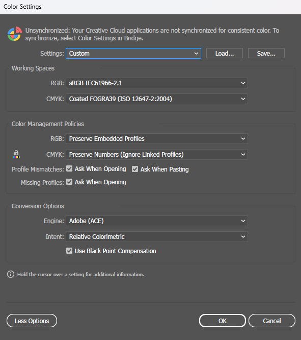

Card Creator Documentation
by Harry Mustoe-Playfair
HTML + CSS based card creation.
Contents
Introduction
There are many solutions out there for card creation software.
However, there are none that provide the ultimate flexibility of a HTML and CSS based layouting engine.
By combining the power of HTML and CSS with browser based printing, we can generate highly complex data driven layouts very easily.
Installation
Please see the README for installation instructions. If you're reading this, you're probably doing alright so far!
Basically download the repo, and npm install.
Then, run npm watch and point your browser to the root directory.
Overview
To use the card creator you will do 3 things:
- Define the cards in a csv file
- Layout the cards in a html file (
card.html) - Style the card using css (in
sass/card.scss)
We will go through each part step by step.
Data Preparation
The first thing to do is create your source data.
The only supported option at the moment is a CSV input. Your CSV file must have headers.
It's a good idea to have the following headers:
| Field | Description | Example |
|---|---|---|
id |
Some unique string/number for the card. | 1, fire_goblin, ace_spades |
quantity |
Determines how many copies of a card there will be. | 10 |
An example csv:
id,quantity,name,description,type,stat_atk,image
goblin,5,Fire Goblin,A tiny little fire goblin. He <strong>hot</strong>.,fire,5,examples/fantasy/im/fire_goblin.jpg
wight,2,Wight,Used to be a famous singer.,undead,10,examples/fantasy/im/wight.jpg
pory,5,Pory,What even is this thing?,fairy,1,examples/fantasy/im/pory.jpg
werebear,1,Werebear,"It's <em>huge</em>.
Hope we don't get caught by it.",nature,15,examples/fantasy/im/werebear.jpg
natural_elixir,2,Nature's Elixir.,So <em>fancy</em>.//Why is there no healing?,nature,,examples/fantasy/im/natural_elixir.jpgOnce you have your csv file ready, you can upload it via the file input on the main page.
Your card data will persist page refreshes, meaning you can update your design without having to reload the csv every time.
If you get sick of having to re-upload your file every time you make a change, then if you are running a "served" version of the card creator (via http), then you can enter a pathname at the following line in index.html
// If you are able to run a local webserver, then put the relative filename
// to the csv file here to prevent having to choose it via the file input
// every single time :)
file: null,
// For example:
file: 'cards.csv',The path must be relative to the root folder (where index.html resides). You can then either just refresh the page, or click the "Refresh file and template" button.
Card Design
Data Transformation
It can be helpful to process your data for inclusion on the cards.
This has numerous benefits, but most of all, it allows you to have easy to write and maintain csv files, while still having unparalelled functionality.
There are two types of transformations you can do:
- Pre-processing
- Inline
Data Pre-processing
Inside index.html you will find the following lines:
// Change this function to pre-process any of the card data.
processCard: (card, row_index, card_index, subcard_index) => {
// you can process the card data any way you like.
return card;
},This is a javascript function, within which you can modify any of the card data you like before it is displayed.
You can even use it to add new columns to your data.
The app takes each row and repeats it quantity number of times, and passes numerous indexes to this function to help you keep track.
The arguments passed to the function are:
card |
A plain javascript object whose keys are the headers in your csv file. |
row_index |
The row number from the csv file (0 indexed). |
card_index |
The card number from the csv file (0 indexed). This is respective of quantity, so will always be the same or larger than row index. |
subcard_index |
The index of this card in the current row. |
For example, if a csv contains 50 rows and each row has a quantity of 2, then the row_index would go from 0 to 49, the card_index would go from 0 to 99 and the subcard_index would cycle between 0 and 1.
Example using the above CSV
processCard: (card, row_index, card_index, subcard_index) => {
// Make an icon image based on the card's type.
card.icon_image = `images/${card.type}_icon.png`;
// Give each card a blank healing stat.
card.stat_healing = null;
// Make all fairy cards have a healing stat.
if (card.type === 'fairy') {
card.stat_healing = 5;
}
// Create a string based on the card's position in the deck.
card.position = `${row_index} / 5 | ${card_index} / 15`;
return card;
},Then, in your card template, you can refer to the new columns, or anything else you might add/change.
Inline Processing
A number of functions are included to help easily translate your data to a usable format.
You can take a look at js/helpers.js for more information, but here is a summary:
| Function | Description | Example input | Example output |
|---|---|---|---|
| titleCase | Makes a string title case | heLLo thERe |
Hello There |
| ucfirst | Uppercases the first letter of a string, and lower cases the rest | heLLo thERe |
Hello there |
| snakeCase | Transforms a string to snake_case | heLLo thERe |
hello_there |
| slug | Transforms a string to a "slug", safe for URLs and lowercase | heLLo thERe |
hello-there |
| markdownParse | Parses a string as markdown | Hello *there* |
Hello <em>there</em> |
| shuffle | Shuffles an array | ['a', 'b', 'c', 'd'] |
['d', 'a', 'c', 'b'] |
Example usage:
<div class="card">
<h1 x-text="titleCase(card.name)"></h1>
<template x-for="question in shuffle(card.questions)">
<div x-text="`${markdownParse(question)}`"></div>
</template>
<img :src="slug(card.name).png">
</div>You can find loads of examples of usage in the examples folder. Here is the fantasy example:
// sorry, this example only works in "served" mode.Styling the Cards
Once you have the basic structure of the cards set up, you can now move on to styling.
In reality, you will go back and forth between the layout and the style continuously.
To style your cards, open up sass/card.scss, and you'll find the following:
// sorry, this example only works in "served" mode.Again, you can find some examples in the examples directory.
SASS vs CSS
If you're familiar with CSS, you can use SASS just like css - it will give you the same result.
However, SASS offers many advantages that CSS lacks.
My favorite things that SASS offers are:
- Variables - e.g.
$color-red: rgba(255,0,0,1) - Color manipulation - e.g.
darken($color-red, 10%) - Arrays and Loops
- Nesting
The last point is the killer for me - you can nest css rules in a very logical way.
// instead of writing this in css:
.container {
color: red;
}
.container .subelement {
color: blue;
}
.container .subelement .text {
padding: 1rem;
}
.container .subelement .text .highlight {
font-weight: bold;
background: yellow;
}
.container.alternate .subelement {
color: green;
}
.container.alternate .subelement .text .highlight {
color: pink;
}
@media only print {
.container {
color: black;
}
.container .subelement {
color: black;
}
}
// in scss you can write it like this:
.container {
color: red;
@media only print {
color: black;
}
.subelement {
color: blue;
@media only print {
color: black;
}
.text {
padding: 1rem;
.highlight {
font-weight: bold;
background: yellow;
}
}
}
&.alternate .subelement {
color: green;
.text .highlight {
color: pink;
}
}
}
For whatever reason, I find this so much easier than non-nested CSS. It makes it so much clearer what styles apply in which containers.
Styling Tips
You can apply styles only on screen or only for print with the following code:
@media only screen {
// non print styles go here
}
@media only print {
// print styles go here
}sass/app.scss includes some helpful default styling, including an automatic bleed setting.
There is some more information about bleed settings in the printing section.
Printing
I highly recommend using Google Chrome for any and all printing.
Press ctrl+p or 3 dots > print, and use the "Save as PDF" output option.
Do not use Adobe PDF or Microsoft print to PDF - they are rubbish and inconvenient in comparison.
Microsoft print to PDF
Microsoft print to PDF doesn't allow custom page sizes, so can't print individual cards.
Adobe PDF
Adobe PDF rasterises random parts of the image and compresses them horribly. I cannot explain what it does, because it's so random.
It's funny, because if you open up the generated file in illustrator, there is nice vector data there, but overlaid on top is overly compressed raster data in random chunks.
However, it's far too much work to edit all of that, and any necessarily raster data on the image is heavily compressed for whatever reason, making it no good for print.
You can get better results from Adobe PDF by editing the advanced settings, but you also need to set up page sizes for any page size you require - it doesn't respect page sizes from CSS.
Bleed settings
When printing at home, I find having a bleed cumbersome - so you may want to set the bleed to 0 when printing at home.
Printing for Screen
When exporting for screen, the best way is to use the Individual page setting. This prints exactly one card per page.
You can then use software of your choice to convert the pdf to regular image files (png, jpg, whatever).
Using Imagemagick
Imagemagick is a great choice for converting on the command line, and is high quality and quick.
You can use the following command to convert a pdf to png, for example:
magick convert -density 600 input.pdf cards.pngNote, if you need to rename the files in a particular way, Ant Renamer is great, simple software!
This will create one image file per pdf page at 600 DPI. Replace the 600 with whatever DPI you want the output to be.
Using Adobe Illustrator
Open the PDF in illustrator, and select all pages. I would untick the "Import PDF pages as links" option if you want to do any further editing. It doesn't really matter if you're not doing any editing.
Now just File > Export > Export As and make sure "Use Artboards" is ticked.
Printing in RGB
RGB printing is pretty easy - just follow the steps above, but instead of using the Individual page size, you can use a physical page size.
This is really no different to printing for screen.
Printing in CMYK
There are a few considerations when printing for CMYK. Browsers have zero support for CMYK output, so we'll have to get creative.
For the most part, you can just rely on RGB to CMYK conversions in image editing software - however, there is one trick that will help if you need specific elements to be specific colours.
One such example is with fine text - often you will want small, fine text to be CMYK(0%,0%,0%,100%) to avoid ghosting from small registration misalignment.
To get around this, I would create a css variable for any potential CMYK colour you would like, and then change it to another, specific colour that is not used elswhere in your design:
:root {
--text-color: rgb(0,0,0);
}
.card {
color: var(--text-color);
}
.print-cmyk {
--text-color: rgb(255,0,255);
}Then use that class on your cards when you're printing for CMYK:
<div class="card print-cmyk">You should end up with something like this:
Then, when you import the file into illustrator, go to edit, color settings and make sure the colors are set up how you wish.
If in doubt, ask your printer. If they don't come up with a satisfactory answer, use sRGB for RGB and Coated FOGRA39 for CMYK.
You'll want to CMYK preseve numbers and use Adobe (ACE) with relative colorimetric intent and black point compensation on.
Note, if your cards are highly photographic in nature, then perceptual intent may work better for you. Relative colorimetric will be a fairly pleasing representation while achieving good strong colors.
Now go to File > Document Colour mode and change it to CMYK Color. This will convert it from RGB to CMYK.
The last step is to convert your colors.
- Select all with Ctrl + A or Select > Select All.
- Go to Edit > Edit Colors > Recolor Artwork
- Select Advanced Options
- Find your color in the list - note it will have changed RGB values, so you will have to identify it by sight.
Now you can export the cards as above, but as CMYK files.
Most printers prefer PDF, so I would go File > Save a Copy, and choose the "PDF/X-4:2008" preset, but for cards I would edit the following settings:
- General > Optimise for Fast Web View ON
- Compression > Color Bitmap Images
- Bicubic Downsampling To
- 600ppi for images above 750ppi
- Compression Automatic (JPEG)
- Image Quality Maximum
- Compression > Compress Text and Line Art ON
- Marks and Bleed all OFF
- Output > Color Conversion No Conversion
And that's it! Happy printing :)